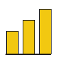

La connexion avec Google sert uniquement à vous identifier. Elle est indépendante des données que vous choisirez ensuite d'analyser dans metrics-dash. Une fois connecté, vous pourrez : • connecter vos propres sources de données comme Stripe, Shopify ou Power BI ; • analyser vos données directement depuis le dashboard ; • ou explorer metrics-dash en mode démo, avec des données simulées. Vos données d'analyse restent distinctes de votre compte de connexion.

Carte colorée selon le CA généré par pays de facturation. Plus la couleur est intense, plus ce pays représente une part importante du chiffre d'affaires. Molette ou boutons +/- pour zoomer, glisser pour te déplacer une fois zoomé.
| Pays | Clients | CA |
|---|
Regroupe toutes les commandes par jour de la semaine, toutes semaines confondues. Utile pour repérer un jour fort ou faible (ex : plus de ventes le vendredi).
Illustre le principe de Pareto (souvent "80/20") : une petite part de tes clients fait-elle une grande part du CA ? Ici : part du CA venant des 20% de clients qui dépensent le plus, vs tous les autres.
| Client | Montant |
|---|
Basé sur tes abonnements Stripe actifs (pas les paiements ponctuels analysés ailleurs) : combien ça représenterait si chaque abonnement était facturé tous les mois, quel que soit son cycle réel (annuel, hebdomadaire...).
MoM (Month-over-Month) = variation vs le mois précédent. YoY (Year-over-Year) = variation vs le même mois l'année dernière. Ce sont les deux métriques de croissance les plus utilisées en BI.
| Mois | CA | MoM | YoY |
|---|
La moyenne mobile lisse les pics/creux journaliers pour voir la vraie tendance. C'est la technique de base pour lire un graphique de série temporelle.
Chaque mois, quelle part du CA vient de nouveaux clients (1er achat ce mois-là) vs de clients qui reviennent ? Beaucoup de "nouveaux" = tu acquiers. Beaucoup de "récurrents" = tu fidélises. Les deux comptent, mais pas pour les mêmes raisons.
Combien de clients dans chaque segment RFM, en proportion.
Technique de segmentation client classique en marketing/data : chaque client reçoit un score 1-4 sur trois axes. Récence (il a acheté récemment ?) · Fréquence (il achète souvent ?) · Montant (il dépense beaucoup ?). Les scores combinés donnent un segment actionnable (Champions, À risque, Perdus...).
| Client | Récence (j) | Fréquence | Montant | R | F | M | Action marketing suggérée | Segment |
|---|
Moyenne du % de rétention à chaque mois écoulé, sur toutes les cohortes — une seule courbe pour voir la tendance générale sans lire tout le tableau.
Chaque ligne = un groupe de clients ayant acheté pour la première fois ce mois-là (la cohorte). Chaque colonne = combien de mois plus tard. La couleur montre le % de la cohorte encore active. C'est l'outil de référence pour mesurer la fidélisation dans le temps.
Même lecture que le tableau de rétention, mais en chiffre d'affaires plutôt qu'en % de clients actifs. Deux cohortes avec la même rétention en % peuvent valoir très différemment si l'une regroupe des clients qui dépensent plus.
Projette les prochains mois à partir de la tendance historique (régression linéaire simple, sans librairie externe). La zone bleue est l'intervalle de confiance (~95%) : elle s'élargit avec l'horizon, une prévision lointaine étant statistiquement moins fiable qu'une prévision proche.
Même méthode que la prévision de CA, appliquée au nombre de commandes plutôt qu'au montant. Répond à « combien de ventes » plutôt qu'à « combien ça va rapporter » — les deux ne bougent pas forcément ensemble (ex : panier moyen qui grimpe).
Projette le rythme d'acquisition de nouveaux clients par mois, à partir de la tendance historique. Utile pour anticiper si le rythme d'acquisition ralentit avant que ça se voie sur le CA.
Chaque terme employé ailleurs dans le dashboard, expliqué simplement — pas besoin de tout connaître pour commencer.
Power BI n'a pas besoin d'un connecteur spécial : sa fonction native « Obtenir les données > Web » lit un fichier CSV en ligne directement, sans code. Dans Power BI Desktop : Accueil → Obtenir les données → Web, colle l'une des URL ci-dessous, valide — la table apparaît, prête à être mise en forme.
Stripe ne transmet aucune info sur ton activité (une transaction, c'est juste un montant, un client, une date) — cette info sert uniquement à situer tes métriques dans leur contexte.